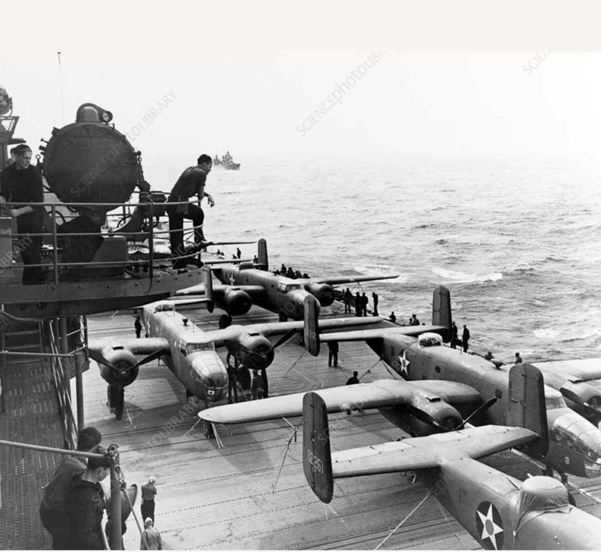

18 avril 1942
Tokyo et plusieurs villes japonaises – Japon
Alliés : États-Unis – 16 bombardiers B‑25 Mitchell embarqués sur le porte-avions USS Hornet, sous le commandement du lieutenant-colonel James H. Doolittle.
Axe : Japon – Défense aérienne et civile japonaise, surprise par l’attaque.
Premier bombardement américain sur le territoire japonais après Pearl Harbor, le raid Doolittle vise à frapper Tokyo et plusieurs villes industrielles pour démontrer que le Japon n’est pas à l’abri et pour remonter le moral américain.
Le 18 avril 1942, les 16 B‑25 décollent du pont de l’USS Hornet plus tôt que prévu après la détection de navires japonais. Ils volent vers le Japon, bombardent des objectifs à Tokyo, Yokohama, Nagoya et Kobe, puis poursuivent vers la Chine, où la plupart des appareils s’écrasent ou sont abandonnés.
Les dégâts matériels au Japon restent limités, mais plusieurs membres d’équipage sont capturés, certains exécutés ou emprisonnés. L’impact psychologique est en revanche considérable, tant au Japon qu’aux États-Unis.
Le raid Doolittle prouve que le Japon peut être frappé malgré sa supériorité initiale dans le Pacifique. Il pousse le commandement japonais à redistribuer ses forces et contribue indirectement aux décisions qui mèneront à la bataille de Midway.